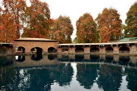

Indian architecture is rooted in its history, culture and religion. Among a number of architectural styles and traditions, the best-known include the many varieties of Hindu temple architecture, Indo-Islamic architecture, especially Mughal architecture, Rajput architecture and Indo-Saracenic architecture. Much early Indian architecture was in wood, which has not survived. Instead the earliest survivals are from the many sites with Indian rock-cut architecture, most Buddhist but some Hindu and Jain.
Hindu temple architecture is mainly divided into the Dravidian style of the south and the Nagara style of the north, with other regional styles. Housing styles also vary between regions, partly depending on the different climates. Haveli is a general term for a large townhouse.
The first major Islamic kingdom in India was the Delhi Sultanate, which led to the development of Indo-Islamic architecture, combining Indian and Islamic features. The rule of the Mughal Empire, when Mughal architecture evolved, is regarded as the zenith of Indo-Islamic architecture, with the Taj Mahal being the high point of their contribution. Indo-Islamic architecture influenced the Rajput and Sikh styles as well.
During the British colonial period, European styles including neoclassical, gothic revival, and baroque became prevalent across India. The amalgamation of Indo-Islamic and European styles led to a new style, known as the Indo-Saracenic style. After independence, modernist ideas spread among Indian architects as a way of progressing from the colonial culture. Le Corbusier, who designed the city of Chandigarh influenced a generation of architects towards modernism in the 20th century. The economic reforms of 1991 further bolstered the urban architecture of India as the country became more integrated with the world's economy. Traditional Vastu Shastra remains influential in India's architecture during the contemporary era.[1]
Martand
The Martand Sun Temple is a Hindu temple located near the city of Anantnag in the Kashmir Valley of Jammu and Kashmir (union territory), India. It dates back to the eighth century AD and was dedicated to Surya, the chief solar deity in Hinduism; Surya is also known by the Sanskrit-language synonym Martand (मार्तण्ड, Mārtaṇḍa). The temple was destroyed by Sikandar Shah Miri.
Verinag

Verinag (/ˈveɪriːnɑːɡ/ is a town named after and famous for the Verinag spring and Mughal garden in Anantnag district of the union territory of Jammu and Kashmir, India. It is a notified area committee with tehsil status (Shahabad Bala Verinag) and is about 26 kilometers away from Anantnag and approximately 78 kilometres south-east from Srinagar which is the summer capital of the union territory of Jammu and Kashmir. Verinag is also the first tourist spot of Kashmir Valley when travelling by road from Jammu, the winter capital of the union territory of Jammu and Kashmir towards Srinagar. There is an octagonal stone basin at Verinag Spring and an arcade surrounding it which were built by Mughal emperor Jahangir in 1620 A.D. Later, a beautiful garden next to this spring, was laid out by his son Shah Jahan. This spring is known to never dry up or overflow. Verinag Spring is also the major source of river Jhelum.[4] Verinag Spring and Mughal Arcade surrounding it is officially recognized by Archaeological Survey of India as a Monument of National Importance.[5]
Verinag spring is the main source of River Jehlum, (vyeth in local Kashmiri language) which flows throughout the valley of Kashmir and finally enters into Pakistan-administered Kashmir.
Burzuhama
The Burzahom archaeological site is located in the Kashmir Valley of Jammu and Kashmir, India.[1] Archaeological excavations have revealed four phases of cultural significance between 3000 BCE and 1000 BCE.[2] Periods I and II represent the Neolithic era; Period III the Megalithic era (of massive stone menhirs and wheel turned red pottery); and Period IV relates to the early Historical Period (Post-megalithic period). The findings, recorded in stratified cultural deposits representing prehistoric human activity in Kashmir, are based on detailed investigations that cover all aspects of the physical evidence of the site, including the ancient flora and fauna.
The Burzahom site revealed the transition from the subterranean and ground level housing features of the Neolithic people to the mudbrick structures of the Megalithic people. The large cache of tools and implements made of bone and stone found at the site shows that the inhabitants were hunting and farming.
The unearthed Antiquities (of art, architecture, customs and rituals) indicate that the prehistoric people of the Burzahom established contact with Central Asia and South West Asia and also had links to the Gangetic plains and peninsular India. The interaction of local and foreign influences is demonstrated by the art, architecture, customs, rituals and language demonstrated by some engravings on pottery and other artifacts..
Pandav Temple
The Avantiswami Temple is a Hindu temple located on the banks of the river Jhelum, 28 km away from Srinagar in Awantipora, Jammu and Kashmir, India. Its complex consisted of two temples, one each for Shiva and Vishnu,[1] which were built under king Avantivarman of the Utpala dynasty in the 9th century CE on the banks of the Jhelum River. The site is maintained by the Archaeological Survey of India.[2][3] Locals call the temples Pandav Lari, meaning "house of the Pandavas".[4]
Akhund Mullah Shah Mosque
Akhund Mullah Shah Masjid or Akhoon Mullah Masjid[1] or Dara Shikoh Masjid,[1] known as Mala Shah Mashid[1] in Kashmiri, is a mosque built by Dara Shikoh in 1649 for his spiritual mentor.[2] Located in Srinagar, it is a mosque inside a mosque. The prime sanctuary is entirely separated from the main building through a courtyard that surrounds it. There is a stone lotus that crowns the podium of the mosque.

.jfif)
.jfif)
.jfif)